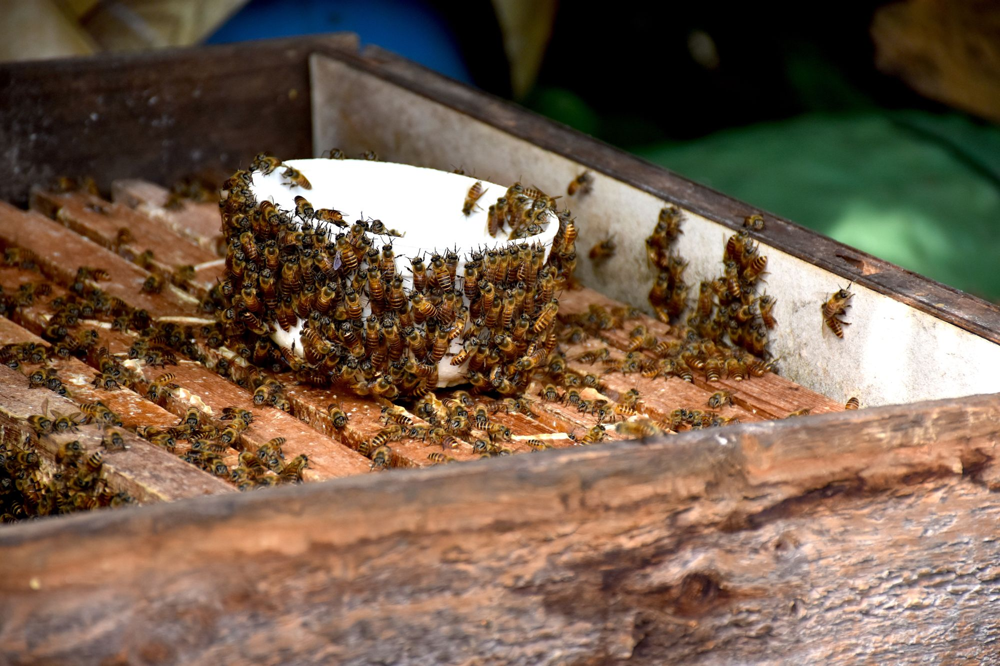
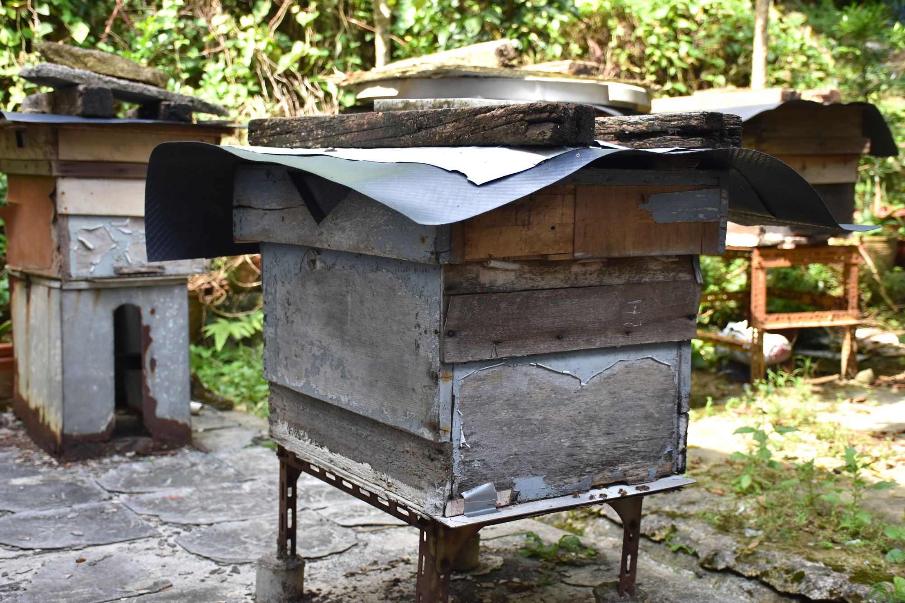

老圍邨趙伯
嚴肅的外表，對著自己一手養大的蜜蜂時則是如父親般照料。
趙伯，現在已經85歲，他在年少時養過鴿子，愛玩性格令他後來開始接觸養蜂。
初初是為了拿蜜糖，但慢慢地開始對「蜜仔」產生了感情，並與牠們建立了四十多年關係。


與蜂之情
最高峰時養過三十多座蜂箱，年老的關係令他養蜂數量減至10多箱左右。
趙伯喜愛與人分享，從蜜蜂得到的蜜糖除了自用還會送給鄰居。
雖然他的女兒們都怕蜜蜂，但趙伯仍然希望對蜜蜂感興趣之人可以嘗試養蜜蜂。
趙伯悉心的照顧令他的蜜仔可以有個安居樂所，看到蜜仔們都沒有離開他，可知他和蜜仔們感情深厚！